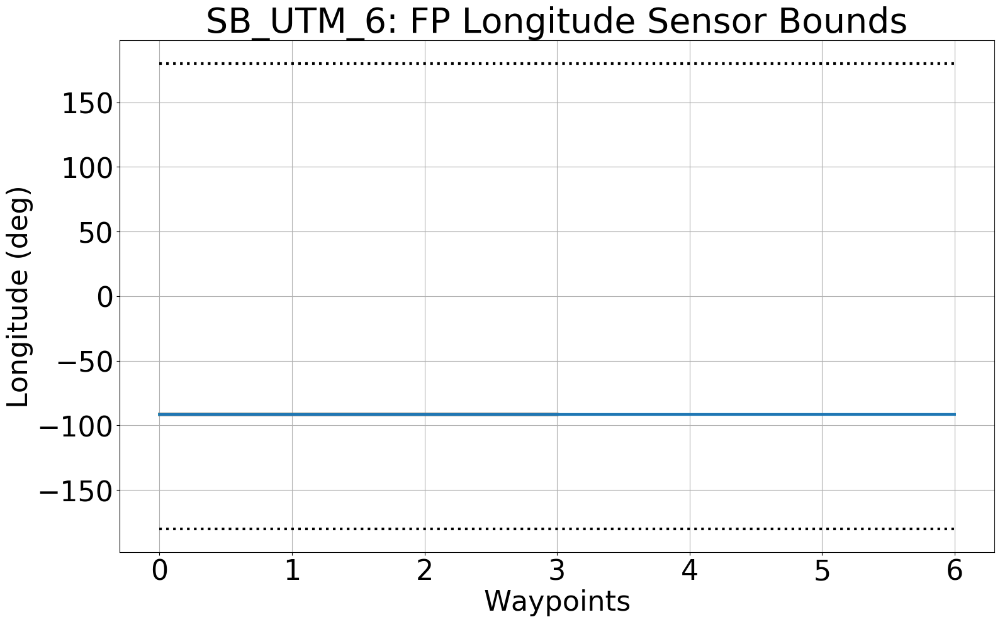
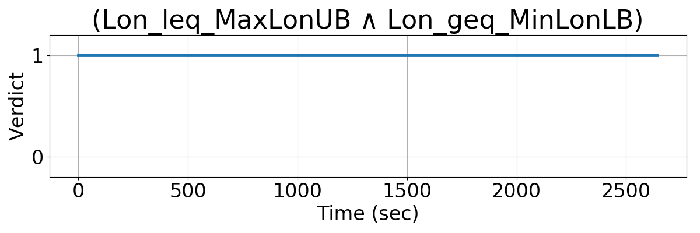
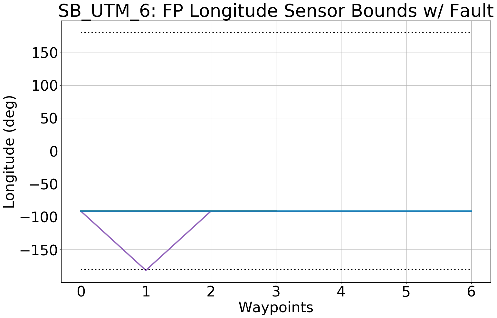
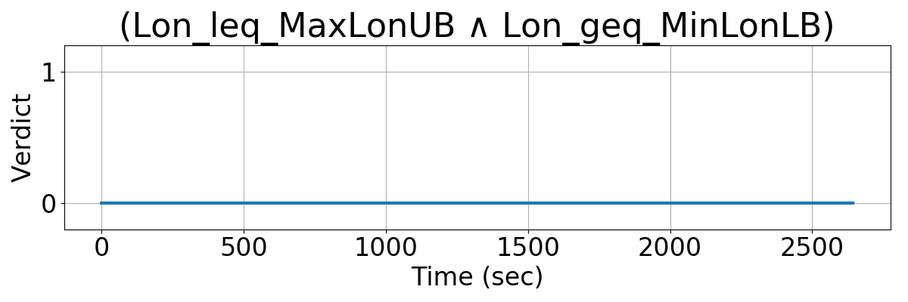

Integrating Runtime Verification into an
Automated UAS Traffic Management System
Matthew Cauwels, Abigail Hammer, Benjamin Hertz, Phillip H. Jones, Kristin Y. Rozier
This webpage contains supplementary specifications for "Integrating Runtime Verification into an
Automated UAS Traffic Management System" by M. Cauwels, A. Hammer, B. Hertz, P. H. Jones, and K. Y. Rozier
SB_UTM_6
Specification Description
The longitude (fpLon) of any UAS's waypoint in its flight plan will be bounded between MaxLonLB and MinLonUB.
Signals Required
fpLon
Boolean Conversion of Signals to Atomic Inputs
fpLon_leq_MaxLonUB = 1;
for(i = 0; i < NumUAS; i++)
{
for(j = 0; j < NumWP[i]; j++)
{
// if UAS i's fpLon is greater than the upper bounded
// and the value is not "nan"
if((fpLon[i] > MaxLonUB) && (fpLon[i] == fpLon[i])
{
fpLon_leq_MaxLonUB = 0;
}
}
} fpLon_geq_MinLonLB = 1;
for(i = 0; i < NumUAS; i++)
{
for(j = 0; j < NumWP[i]; j++)
{
// if UAS i's fpLon is less than the lower bounded
// and the value is not "nan"
if((fpLon[i] < MinLonLB) && (fpLon[i] == fpLon[i])
{
fpLon_geq_MinLonLB = 0;
}
}
} MLTL Specification
Original: (fpLon_leq_MaxLonUB ∧ fpLon_geq_MinLonLB)
Fault Explanation
The longitude from a UAS's flight plan is not physically possible.
Additional Notes
Longitude can only ever by between -180 and 180 degrees. Anything outside these bounds is nonsensical and indicates a fault within the system.
Figures



